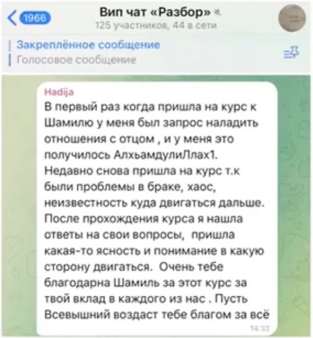
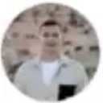

Старт мастер-группы — ноябрь
Из тревоги и хаоса — в ясность
Трёхмесячная мастер-группа психолога Шамиля Аслаханова. Научись понимать, почему ты чувствуешь и действуешь именно так — и управлять собой.
Записаться в Telegram →
Трёхмесячная мастер-группа психолога Шамиля Аслаханова. Научись понимать, почему ты чувствуешь и действуешь именно так — и управлять собой.
Записаться в Telegram →Разбираемся с причинами состояний, а не с симптомами.
Видим свои выборы и берём ответственность за решения.
Вип-чат и группа, которая проходит путь вместе с тобой.
Это не волшебная пилюля, а системная работа над собой. Процесс взросления сознания.
Всё, что человек делает, идёт от базовых потребностей: выживание, любовь, признание, смысл.
Зачем мы вообще их закрываем?
Человек рождается в неопределённости. Отсюда тревога и поиск ясности.
Можем ли мы стать стабильными?
Тревога, злость, радость — подсказки, куда направить внимание.
Из чего я состою?
Любое «ничего не делаю» — это тоже решение.
Что внутри человека?
Умение различать понятия даёт ясность и завершает лестницу.
«Я нашла ответы на свои вопросы, пришла какая-то ясность и понимание, в какую сторону двигаться»


Был расфокусирован и не понимал себя. Через полгода — первый «лям» за один запуск.1,6 млн ₽

«Я поняла, что многое меняется после курса… на жизнь по-другому смотришь»+2,5 млн продаж

Не мог позволить себе передохнуть и часто выгорал. Вырос с 5 до 40 тыс.$.квартира за 700 тыс.$
«Панические атаки вплоть до страха смерти… всё прошло у него и не повторялось»

Нашёл своё дело, появилась уверенность в своих силах и определённость.1 250 000 ₽

Групповые созвоны по 12 основам, вип-чат и поддержка. Места ограничены.
Забронировать место →